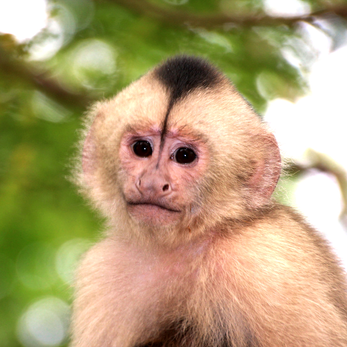

BIENVENIDOS A NUESTRA PAGINA
Nada se compara con la alegría de volver a casa y encontrar un compañero leal. El amor incondicional de una mascota puede brindar más que compañía. Las mascotas también pueden disminuir el estrés, mejorar la salud del corazón e, incluso, ayudar a los niños con sus habilidades emocionales y sociales.
Para muchos de nosotros las mascotas no son simples compañeros, son miembros de la familia.
Max
Jerry

Tom